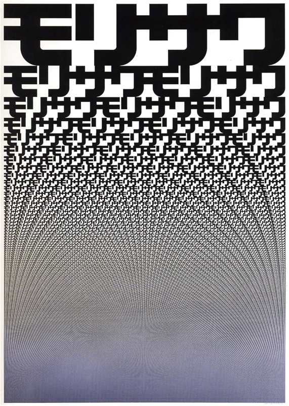
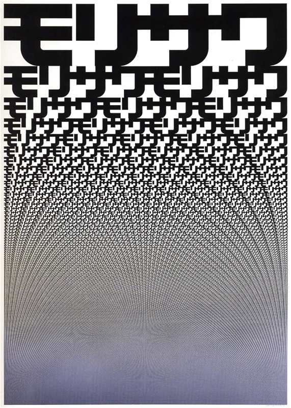
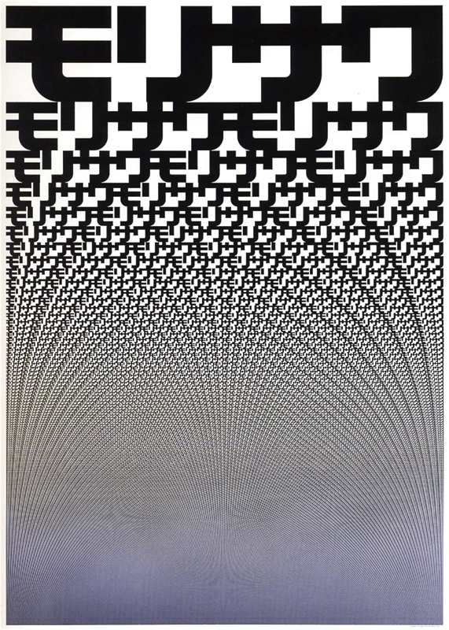

# Creative Coding
## Digitale Werkzeuge selber basteln
*HKB Creative Coding 2017*
Michael Flückiger
* BA Studium Viskom, HKB 2006 — 2009
* MA Studium Communicationdesign, HKB 2009 — 2012
* Grafiker und Interactiondesigner bei Rob & Rose, 2009 — 2012
* Selbständig seit 2012, Teilzeit Wissenschaftlicher Mitarbeiter FSP KD und Medialab an der HKB
www.laikafont.ch
## Was bedeutet das jetzt für mich als Gestalter?
>
«Sich wiederholende Aufgaben werden automatisiert: Die Arbeit des Gestalters verschiebt sich von der Gestaltung einzelner Dokumente zur Gestaltung eines einzigen Regelwerks für das komplette Ergebnis. Die Gestaltung ist nicht ein nachgeschobener Prozess, sondern wird vorgezogen. Sie bedeutet nicht mehr nur Formgebung, sondern Regeldefinition. (…) »
rokfor.ch
Architektur
Google Bilder-Suche nach Parametric Design
Dach des neuen Elefantenhauses im zürcher Zoo
SOM Mumbai Airport
Weingut Bearth Deplazes
Weingut Bearth Deplazes, Nahansicht der Mauer
Kommunikationsdesign

John Maeda / Maeda Studio
MIT Media Lab Identity
DECODE, Identity für eine Ausstellung im Victoria & Albert Museum von Karsten Schmidt
«Der Gestalter positioniert nicht Elemente, sondern er beschreibt, wie er auf diese Position gestossen ist. Die Beschreibung muss dabei gewisse Rahmenbedingungen erfüllen: Sie muss etwa logisch nachvollziehbar sein und sie braucht die Charakteristika eines Algorithmus. Intuition und Gefühl müssen dabei für einen Computer ausführbar formuliert werden.»
rokfor.ch
## Tools
Verschiedene Toolsets für spezifische Bedürfnisse von Gestaltern
* niedrige Einstiegshürde, schöne Entwicklungsumgebung
* gute Zeichnungsfunktionen
* einfache Multimedia-Komponenten
* viele Anbindungsmöglichkeiten an bereits existierende Toolsets
* gute Community mit vielen Tutorials und Referenzbeispielen
Note:
Für Künstler/Gestalter existieren mittlerweile eine grosse Bandbreite an Einstiegsmöglichkeiten und Toolsets für ihre spezifischen Bedürfnisse.
### MAX/MSP VVVV
Visuell programmieren

Note:
Angefangen bei den Programmierumgebungen wie Max/Msp oder VVVV, wo einzelne logische Blöcke visuell miteinander verbudnen werden.
### Processing, P5.js
Basis JAVA/Javascript

### Openframeworks
Basis C++

### Basil.js
Indesign Scripting, orientiert an Processing-Syntax

### Paper.js
Basis HTML/CSS/Javascript

### D3.js
Basis HTML/CSS/Javascript

### Three.js
Basis HTML/CSS/Javascript/WebGL

# Warum
…sollen wir uns das antun?
## Lösung Komplexer Probleme
Note:
Parametrisches Design wird einerseits dann relevant, wenn die hohe Komplexität eines Systems eine manuelle Gestaltung extrem Arbeitsintensiv und mühsam macht, wenn viele Abhängigkeiten zwischen den einzelnen Gestaltungseelementen bestehen, und verschiedene Parameter sich gegenseitig auf komplizierte Weise beeinflussen. So zum Beispiel bei architektonischen Entwürfen oder bei komplexen Datenvisualisierungen etc. aber auch bei grafischen Elementen, Schriften etc.
## Lösung Komplexer Probleme
* hohe Komplexität meistern
* komplizierte Prozesse beschleunigen
* aufwändige, repetitive Handarbeiten verhindern
* grosse, evtl automatisierte Modularität herstellen
## Freude am algorithmischen Gestalten
Note:
Andererseits bietet das Denken in Algorithmen und die schier endlose Geduld von Computern im Ausführen komplexer Regeln ein grosses Potential, zu Konzepten und Formensprachen zu gelangen, die erst mit Hilfe von Algorithmen denkbar sind, und nicht mit Papier und Schere / Stift herstellbar wären.
## Freude am algorithmischen Gestalten
* hohe Komplexität herstellen aus reiner Lust an Komplexität.
* Auf neue Formensprachen gelangen
## Selbstermächtigung als Gestalter
## Selbstermächtigung als Gestalter
* Unabhängig werden von fertig gedachten Softwarelösungen
* Kleine scharfe Werkzeuge herstellen
* program or be programmed (Douglas Rushkoff)
Note:
Als Gestalter sind wir in der Regel Anwender von Programmen und können mit diesen die vorgegebenen Aufgaben mehr oder weniger sinnvoll lösen. Sobald wir aber in der Lage sind, unsere eigenen ganz spezifischen Werkzeuge zur Lösung unserer Probleme herzustellen
# Unser Fokus
* Potential erahnen
* Freude und Lust beim Explorieren
* Einfache Eingabe, komplexe Ausgabe
# Algorithmus
Wikipedia:
> Ein Algorithmus ist eine eindeutige Handlungsvorschrift zur Lösung eines Problems oder einer Klasse von Problemen. Algorithmen bestehen aus endlich vielen, wohldefinierten Einzelschritten. Somit können sie zur Ausführung in einem Computerprogramm implementiert, aber auch in menschlicher Sprache formuliert werden. Bei der Problemlösung wird eine bestimmte Eingabe in eine bestimmte Ausgabe überführt.


 
